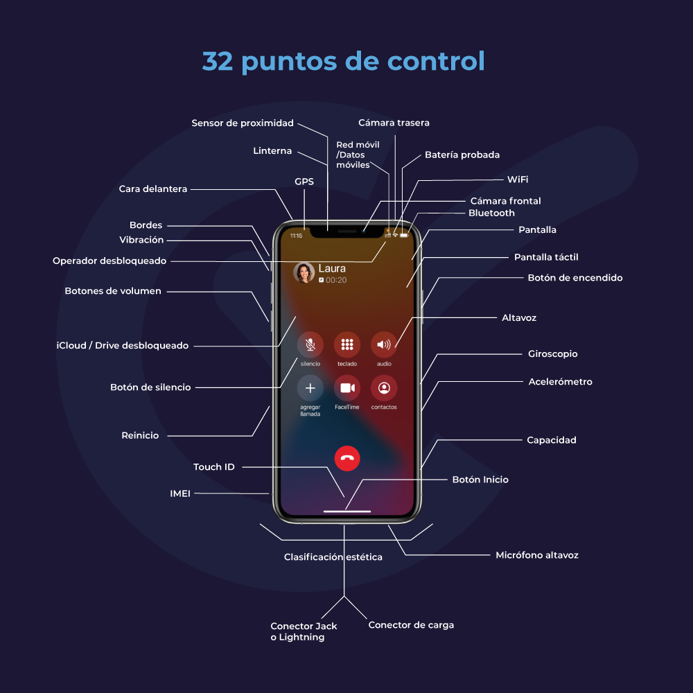

Nuestra especialidad: reacondicionar móviles
CertiDeal es una empresa que vende y reacondiciona teléfonos móviles. Nuestro departamento de compras adquiere los productos de los operadores de telefonía móvil. Ellos
recuperan los móviles que han sido utilizados por una sola persona. Cada uno de los productos reacondicionados que se ofrecen a la venta en nuestro sitio es recuperado por
nosotros, y en nuestras oficinas sigue un proceso de aprobación de tres etapas: verificación, prueba y certificación.
Nuestros expertos son así los primeros en intervenir técnicamente en el producto, que reacondicionamos nosotros mismos, sin ningún otro intermediario. Esa es la garantía que
ofrecemos a nuestros clientes, comprar un móvil con total confianza, reacondicionado, con una garantía de 36 meses y un servicio postventa con
un contacto permanente con nuestros expertos técnicos y siempre disponible para nuestros clientes.
Proceso de aprobación
La verificación
Al revisar el producto, CertiDeal verifica la conformidad del móvil reacondicionado.
CertiDeal garantiza que los datos han sido borrados, que el dispositivo está desbloqueado y es libre, que no está en ninguna lista negra (productos prohibidos para la venta) y que no se ha denunciado su robo. El estado estético de cada uno de nuestros aparatos también se comprueba cuidadosamente.
En caso de que haya que hacer reparaciones menores, nuestro laboratorio cambia las piezas defectuosas. Solo los productos que cumplen con las normas se envían a nuestros equipos de técnicos de pruebas.
Las pruebas
Durante las pruebas del producto, CertiDeal analiza la calidad funcional del móvil reacondicionado.
A cada móvil se le realizan rigurosamente diferentes pruebas en 32 puntos de control. Estas se llevan a cabo en nuestras instalaciones por nuestros equipos técnicos que están entrenados para realizar un control funcional y estético de los móviles reacondicionados.
Esta es una garantía de tranquilidad para nuestros clientes cuando compran y reciben el producto reacondicionado: el aparato va a ser como se describe, en perfecto estado de funcionamiento y listo para vivir una segunda vida a su lado.
La certificación
Tras la certificación, CertiDeal confirma la venta segura del móvil reacondicionado.
Los aparatos que pasan con éxito las etapas de verificación y las pruebas son luego certificados, categorizados según el grado estético. El grado habla solamente del estado estético del móvil. Es decir, son productos que funcionan perfectamente.
Como somos los únicos que calificamos nuestros móviles, la certificación asegura la homogeneidad de las categorías estéticas de los productos que vendemos. Ningún producto se vende sin nuestra certificación y garantía de 36 meses.
El detalle de las 32 pruebas y puntos de control realizados por nuestros expertos

- Cámara frontal: Comprobación de la nitidez y que no exista ningún fallo de funcionamiento.
- Cámara trasera: Comprobación de la nitidez y que no exista ningún fallo de funcionamiento.
- Pantalla: Examen de forma minuciosa para detectar posibles arañazos y grietas.
- Cara delantera: Examen de forma minuciosa para detectar posibles arañazos y grietas.
- Bordes: Examen de forma minuciosa para detectar posibles arañazos y grietas.
- Clasificación estética: Correcto, buen estado, muy buen estado, impecable.
- Pantalla táctil: Comprobación de toda la pantalla táctil con una aplicación especializada.
- Botón de encendido: Comprobación para saber si el móvil se puede encender y apagar.
- Botón de silencio: Comprobación del estado de funcionamiento del botón de silencio manteniéndolo pulsado.
- Botones de volumen: Comprobación del estado del botón de volumen con una pulsación larga.
- Botón Inicio: Comprobación del estado de funcionamiento del botón Inicio manteniéndolo pulsado.
- Touch ID: Verificación del correcto funcionamiento de la función Touch ID.
- Conector Jack o Lightning: Conexiones de prueba.
- Conector de carga: Prueba para la carga adecuada / carga rápida del producto.
- Batería probada: Comprobación del estado de la batería a partir de los datos proporcionados en la aplicación especializada 3uTools.
- Vibración: Comprobar que el móvil vibra correctamente.
- Altavoz: Escuchar el audio en el altavoz.
- Micrófono altavoz: Grabación y escucha de un mensaje de voz.
- Linterna: Probar la función de la linterna.
- Sensor de proximidad: Comprobar que el móvil no se encienda durante una llamada.
- Acelerómetro: Prueba del acelerómetro.
- Giroscopio: Prueba de giroscopio.
- Bluetooth: Activar el Bluetooth y probar el emparejamiento.
- WiFi: Comprobación de la conexión a la red de internet.
- Red móvil: Realización de una llamada telefónica.
- Datos móviles: Prueba de la red de datos móviles.
- GPS: Comprobación de la precisión de la posición del GPS.
- Capacidad: Verificación de la capacidad de memoria disponible en relación con las características del modelo.
- iCloud / Drive desbloqueado: Comprobación de la inicialización.
- Operador desbloqueado: Comprobación de la inicialización.
- Reinicio: Completar el reinicio y la verificación del borrado correcto de los datos.
- IMEI: Comprobar la validez del IMEI del móvil.